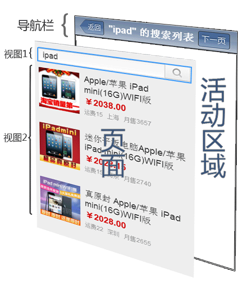
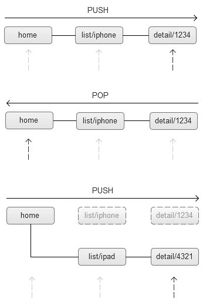
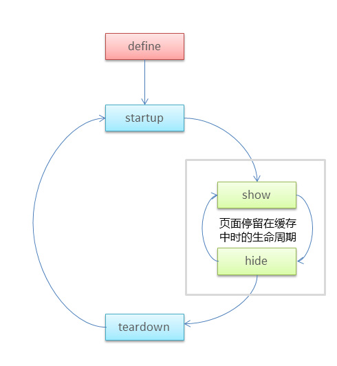
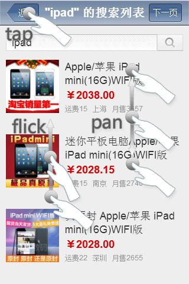
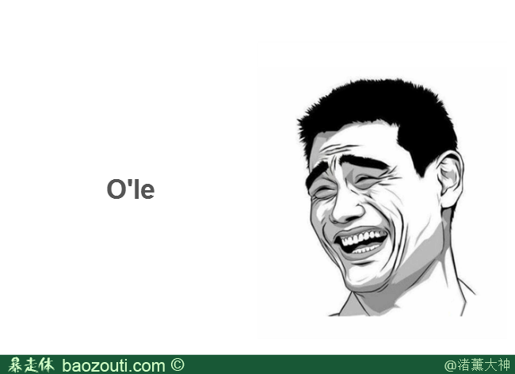
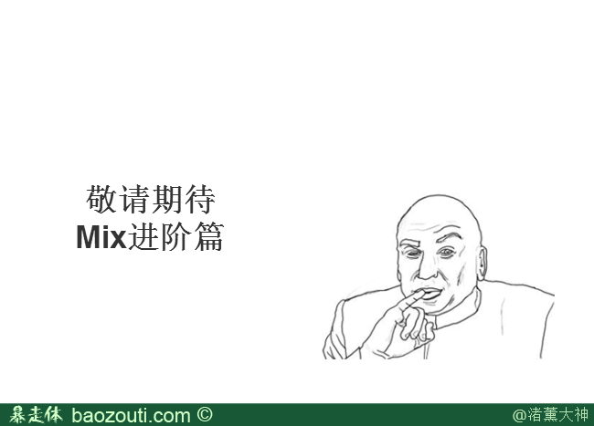

make.easy
Mix解决方案初探
Created by 渚薰
Staff
无线UED-前端Mix小组
@渚薰
@江成
@玄寂
如果你女友饿了，你会怎么做？
普通青年：老板，来一打包子
文艺青年：抓住女人就抓住她的胃
2B青年：我也饿了
上述方法都可以解决核心问题，只是面对的用户不同
- 普通青年：用EXT，YUI
- 文艺青年：用Backbone，Ember
- 2B青年：....

如果是你

你

还有你
我们推荐你用
Mix解决方案
框架
解决方案
通常专注于某个领域的问题。VS
针对WebApp的统一解决方案。
提供自由的API，可以做任何事情。VS
快速开发，集中精力于业务逻辑。
保有自己的生态圈。VS
可以低耦合的来使用其它框架。
Let's Rock
HelloWorld Demo
如果你想对喜欢的人say hello
Just Do it
我们不授人鱼
也不单只授人以渔
如果框架是方法，解决方案就是工具，方法需搭配好的工具

给你一台炒菜机
你可以挑选喜欢的原料
免去制作的麻烦
又不失自娱的乐趣
Mix WebAPP的结构

全局导航

生命周期

转场效果
触摸手势

页面滚动
编写完整的WebAPP
- 引用mixsln.js和mixsln.css等资源
- 插入标准的HTML
- 配置app.config
- 编写页面模板和逻辑代码
- app.start()
HTML & Mix Source
<link type="text/css" rel="styleSheet" href="mixsln.css"/>
<script src="zepto.js" type="text/javascript"></script><!-- 可选 -->
<script src="mustache.js" type="text/javascript"></script><!-- 可选 -->
<script src="mixsln.js" type="text/javascript"></script><div class="viewport">
<header class="navbar"></header>
<section class="content"></section>
<footer class="toolbar"></footer>
</div>config
app.config.enableNavbar = true; // 导航栏开关
app.config.enableToolbar = true; // 工具栏开关
app.config.enableScroll = true; // 页面滚动开关
app.config.enableTransition = true; // 转场动画开关
app.config.templateEngine = { // 模板引擎配置
load: function(url, callback) {
$.get(url, callback);
},
compile : function(text) {
return Mustache.compile(text);
},
render : function(compiled, data) {
return compiled(data);
}
}
Helloworld Page
helloworld.tpl
<h1>Hello World!</h1>
<div><input type="text" id="name"><button>say</button></div>helloworld.js
app.definePage({
name: 'helloworld',
title: '你好',
template: './helloworld.tpl', // 需要加载的模版，路径相对于HTML文件
startup: function() {
var that = this,
html = this.template({}); //经编译后，template字段会变成一个可渲染的函数
this.html(html);
// 通过this.el来获取页面中的元素
this.el.querySelector('button').addEventListener('click', function(e) {
var name = that.el.querySelector('#name').value;
if (name) {
app.navigation.push('hello/' + name); // 改变Hash值
}
});
}
});
HelloBuddy Page
hellobuddy.tpl
<h1>Hello, <em>{{name}}</em></h1>hellobuddy.js
app.definePage({
name : 'hellobuddy',
title : '你好啊',
template : './hellobuddy.tpl',
route : 'hello\\/(P[^\\/]+)\\/?', // 设置路由（Perl风格），name为参数名
startup : function() {
var name = app.navigation.getParameter('name'),// 获取路由中的`name`参数值
html = this.template({name:name})
;
this.html(html);
}
}) app.start()

Q&A
